Debugging iOS Applications using CoreDevice (iOS 17 and up)
This guide shows a walkthrough of how one can use IDA Pro to debug an app installed using Xcode on a device running iOS 17 or iOS 18. The pre-debugging setup is specific to non-jailbroken devices running iOS 18 with a macOS host but the steps in IDA can be reused for most iOS/iPadOS targets (jailbroken, Corellium) with a different platform as the host. The iOS debugger is available with all platforms IDA supports though due to Apple’s iOS tools being available on macs only, the workflow is easier on macOS.
Tested on macOS 15.0 (24A335) using Xcode 16.0 (16A242) with an iPhone 11 running iOS 18.0 (22A3354).
1. Installing an app on a non-jailbroken device
Since it’s the simplest way to install an app onto an iOS device, we’ll be using Xcode to quickly build and install a sample app onto our target device.
Create an iOS Game app by choosing the appropriate template:
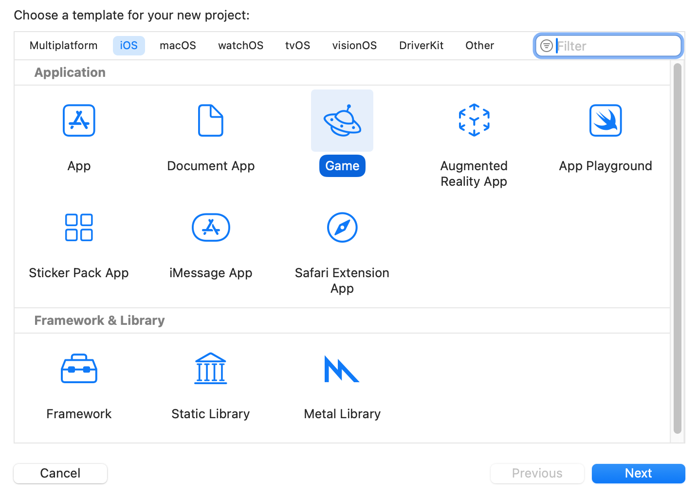
Enter a Product name, make note of the resulting Bundle Identifier. For the scope of this guide, the rest of the project options aren’t relevant.
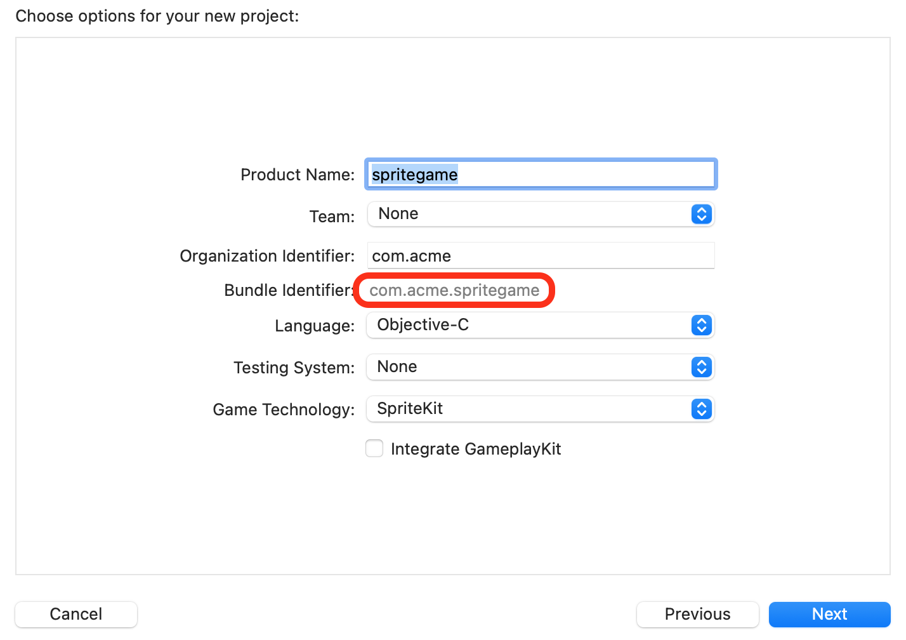
In the main Xcode window, ensure that the appropriate target device (Run Destinations) is selected.
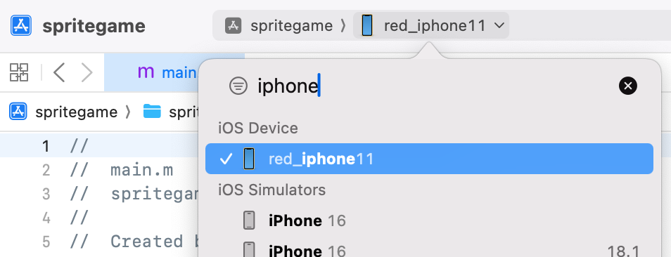
If the device hasn’t been paired, a warning may appear requesting you to accept the “Trust” prompt on the device to pair with the host. If the device hasn’t been used for development recently, Xcode will install a Developer Disk Image to enable development services. It will also copy and extract the shared cache symbols to the host (in ~/Library/Developer/Xcode/iOS DeviceSupport/<device_and_os_version>/).
If you try to Run (clicking on the “play” icon or using CMD-R) the app, an error may appear prompting you to select a development team. Xcode requires that a developer certificate is selected for the signing of the application.
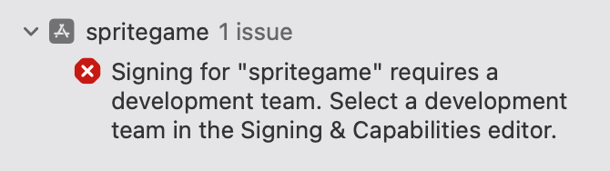
The developer team can be selected via the Signing & Capabilities editor.
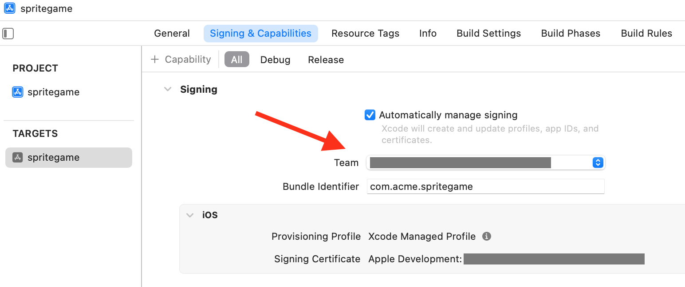
Now that a developer certificate was selected for the app, it must also be trusted on the device. If you attempt to Run the app, another warning should appear prompting you to trust the certificate on the device. (Please follow those instructions to trust that certificate)
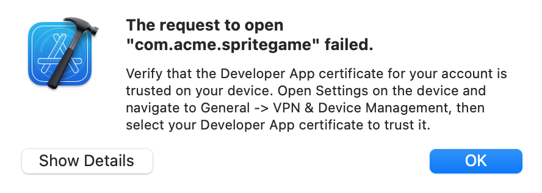
Finally, Run the app and ensure that it starts properly on the target device.
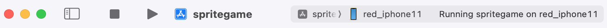
2. Setting up the debug environment, launching the app
Debugging an application on an iPhone is enabled by the debugserver that will attach to the application’s process. The debugserver communicates with clients using (an extended version of) the GDB protocol. IDA comes with an iOS debugger that can “talk” that same protocol. The techniques necessary to prepare the debugging environment on an iPhone have evolved over time (and will likely keep evolving) but fundamentally the goal is always to establish a connection with a debugserver.
The device communication stack was revamped with iOS 17. Devices expose a series of remote services (through remoted which is visible via Bonjour). One of those services is a debugproxy which is… a proxy to the debugserver. debugproxy is a secure service, it is not available to any client. To gain access to secure services, a trusted tunnel must be setup (requires the device to be paired with the host), between the host and the device (the service to set up the tunnel is itself available via remoted).
One of the primary frameworks used for these communications is CoreDevice, with it Apple also provides devicectl which is a very convenient utility that can be used to automate certain tasks to control devices. We will use devicectl to perform certain tasks such as launching an application on the device. Unfortunately devicectl doesn’t provide a direct interface to setup a trusted tunnel and retrieve ports of services exposed through it. It is however possible to reuse some commands of devicectl to create a tunnel and keep it open. In addition, the ports of services are written to system logs after the tunnel is set up so we can recover them with a few tricks.
To make commands provided below immediately usable, we’ll define two helper environment variables. The device name is the same as the one that was used for the target device in Xcode, it can also be found using xcrun devicectl list devices. The bundle identifier is the identifier of the application we’d like to debug
export DEVICE_NAME="red_iphone11"
export BUNDLE_ID="com.acme.spritegame"
Trigger the creation of a trusted tunnel
To request the creation of the trusted tunnel, the devicectl device notification observe command was selected because it can keep the tunnel open for an arbitrary amount of time (controlled using the timeout). Here the name for the Darwin notification (‘foobar’) to observe is one that will presumably never be posted. The timeout (3000[s]) was chosen to be long enough for a debugging session.
Retrieve the details of the debugproxy service (provided through the trusted tunnel) from the system logs. The command below will filter for the specific log messages we’re looking for (ipv6 address of device through tunnel and port of debugproxy service). In short log show (see log(1)) will show messages from the system logs; --last 5m will limit the search to the past 5 minutes (the tunnel should have been created when the previous command was started so 5 minutes ought to be enough); The messages we’re looking for are “Info” messages so --info is necessary; --predicate is used for message filters.
log show --last 5m --info --predicate '((eventMessage CONTAINS "Adding remote service") && (eventMessage CONTAINS "debugproxy")) || (eventMessage CONTAINS "Tunnel established - interface")' --style compact
NOTE: if no log messages match the filter, it is recommended to force the recreation of the tunnel
- kill the
remotepairingddaemon:sudo pkill -9 remotepairingd- retry previous two steps
Some applications can keep the tunnel open, examples: Xcode, Console and Safari. It is preferable to close them before creating the tunnel. If multiple sets of messages match the filter (with different connection details), only the last one should be considered (previous connections would likely be stale).
2024-09-23 10:04:31.396 Df remotepairingd[1067:8211ab] [com.apple.dt.remotepairing:remotepairingd] device-138 (00008030-000D3988119A802E): Tunnel established - interface: utun5, local fd57:8329:afda::2-> remote fd57:8329:afda::1
2024-09-23 10:04:31.422 I remoted[342:81eff3] [com.apple.RemoteServiceDiscovery:remoted] coredevice-15> Adding remote service "com.apple.internal.dt.remote.debugproxy": {
Properties => {
Features => [<capacity = 1>
0: com.apple.coredevice.feature.debugserverproxy
]
ServiceVersion => 1
UsesRemoteXPC => true
}
Entitlement => com.apple.private.CoreDevice.canDebugApplicationsOnDevice
Port => 49350
}
The relevant pieces of information in the messages are:
remote fd57:8329:afda::1 in the first message and Port => 49350 in the second message.
TIP: There are some really good third party tools out there such as DoronZ’s pymobiledevice3 that reimplement the necessary machinery to create a trusted tunnel and make services available.
Launch the app (--start-stopped will make it wait at the process entry point)
xcrun devicectl device process launch -d $DEVICE_NAME --start-stopped $BUNDLE_ID
Retrieve the PID of the process.
xcrun devicectl device info processes -d $DEVICE_NAME | grep $(awk '{print A[split($1, A, "\.")]}' <<< $BUNDLE_ID)
820 /private/var/containers/Bundle/Application/4629EEFD-0AD5-4B3C-B773-FD7D643BC376/spritegame.app/spritegame
We have now created a trusted tunnel, found the connection details necessary for the debugproxy, launched an app and fetched its PID.
3. Debugging in IDA
Open the application executable (typically located in ~/Library/Developer/Xcode/DerivedData/<project_id>/Build/Products/Debug-iphoneos/<appname>.app/<appname>, the path to the build folder can also be retrieved via Xcode Product>Copy Build Folder Path) in IDA.
Open the Debugger>Process options.. dialog.
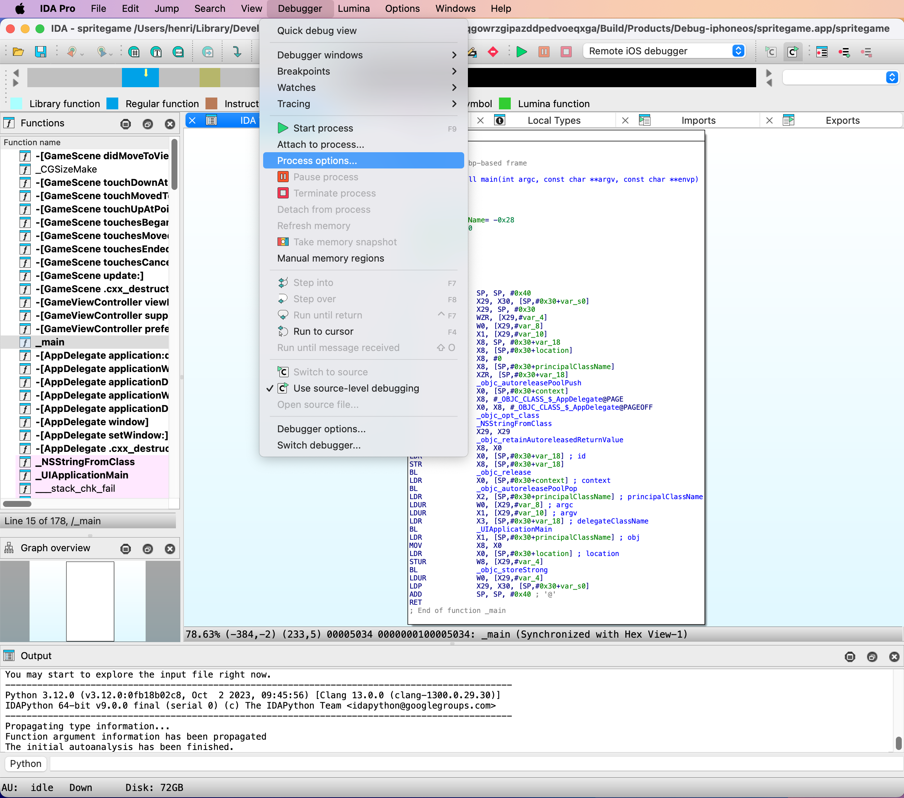
Fill-in the Hostname (address) and Port of the debugproxy. Please use the ones retrieved from the system logs earlier.
The Application and Parameters fields can safely be ignored since we’ll be attaching to a process. For this example the input file is the main executable for the application, as such the Input file field doesn’t need to be modified.
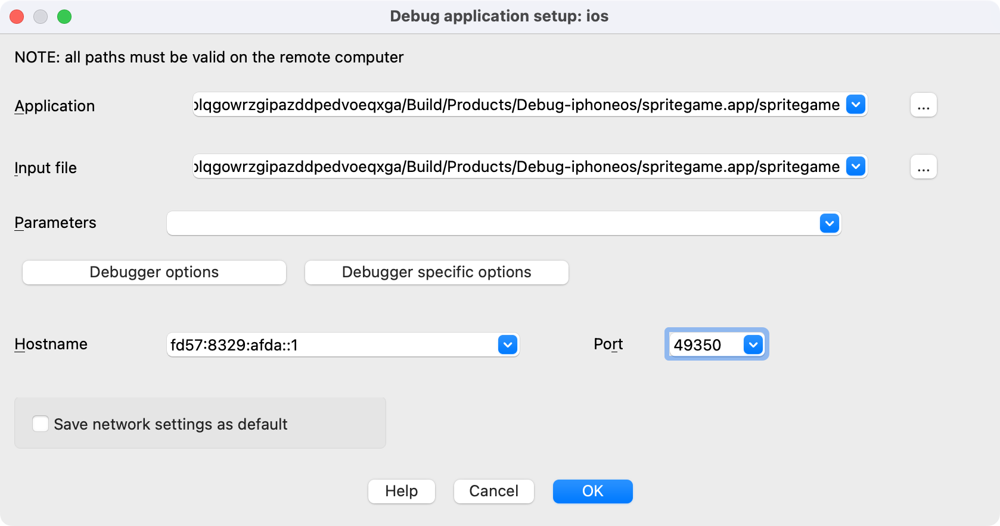
Open the Debugger specific options.
IDA can speed up the loading of shared cache symbols if they have been copied and extracted to the host machine, it is highly recommended to provide the Symbol path (normally ~/Library/Developer/Xcode/iOS DeviceSupport/<device_and_os_version>/Symbols). Launch debugserver automatically should be disabled as it is used to communicate with devices using the MobileDevice framework (no longer a viable option as of iOS 17). Accept this dialog.
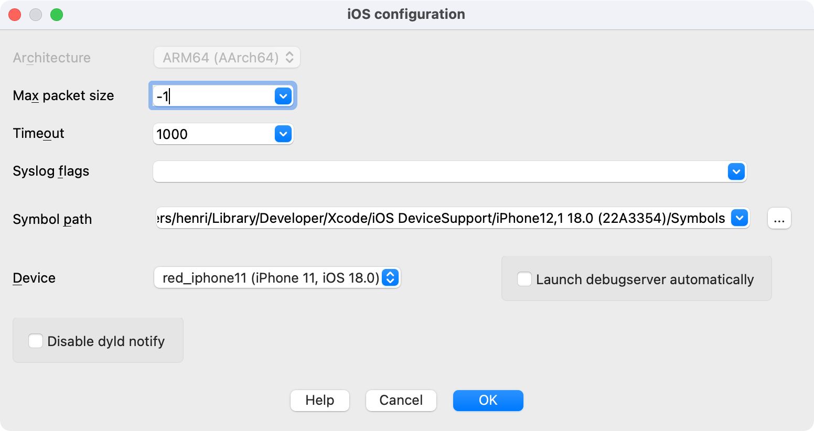
Optionally, open the Debugger options and enable Suspend on debugging start. The Debugger setup dialog can then be closed as well as the Debug application setup dialog.
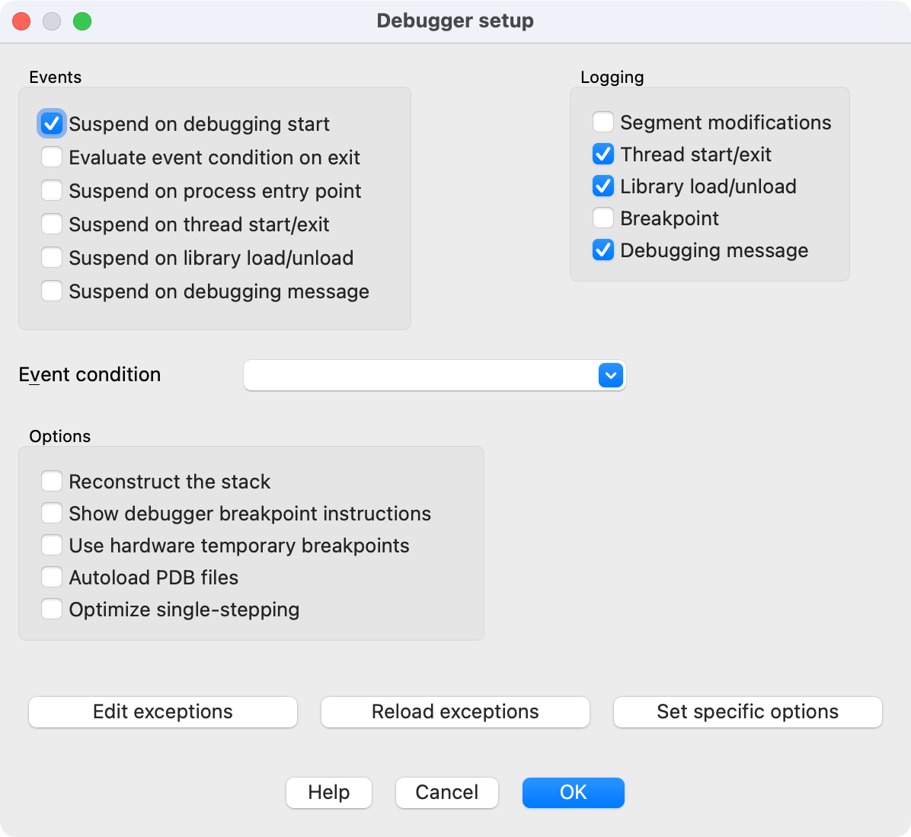
Now that the necessary connection details have been given to IDA, we can attach to the target process.
Open Debugger>Attach to process… We will provide the PID manually so accept this dialog.
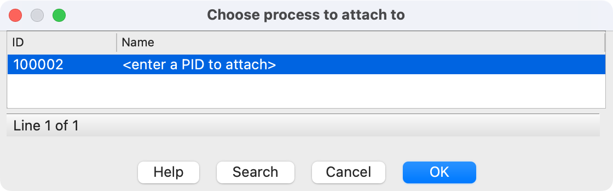
Enter the PID of the target process retrieved earlier using devicectl and accept this dialog.
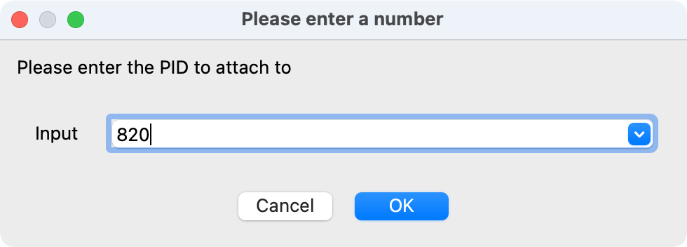
Profit! The Debugging session should start.
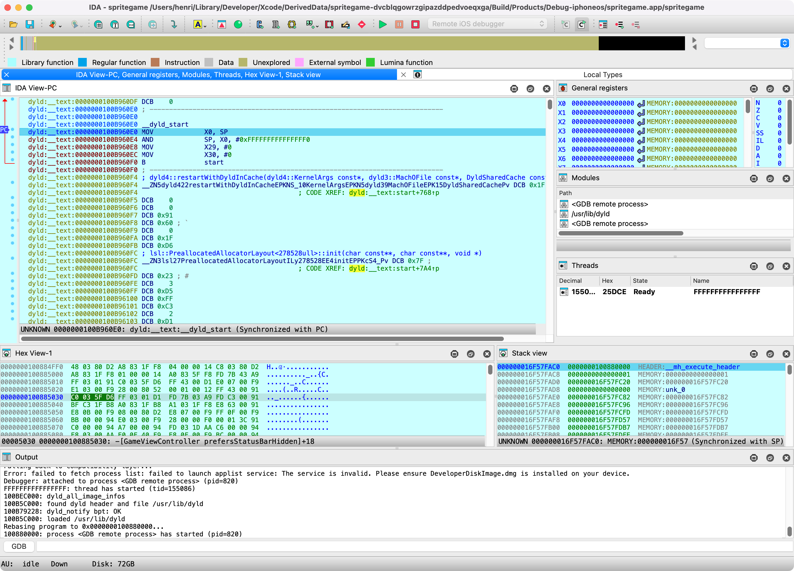